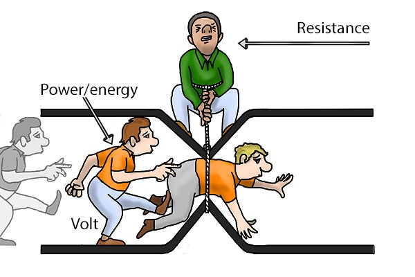
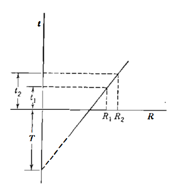
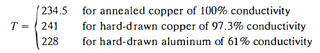
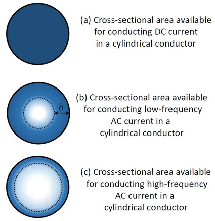

2d · Resistance
Resistance of Transmission Lines
The resistance of transmission-line conductors is the most important cause of power loss in a transmission line. The term "resistance", unless specifically qualified, means effective resistance. The effective resistance of a conductor is given by Eq. 1:

where the power is in watts and \(I\) is the RMS current in the conductor in amperes. The effective resistance is equal to the DC resistance of the conductor only if the distribution of current throughout the conductor is uniform. We shall discuss the nonuniformity of current distribution briefly after reviewing some fundamental concepts of DC resistance.
Direct-current resistance is given by Eq. 2:
where:
- \(\rho\) is the resistivity of the conductor in \(\Omega \cdot m\)
- \(l\) is the length of the conductor in \(m\)
- \(A\) is the cross-sectional area of the conductor in \(m^2\)
Usually, the DC resistance of stranded conductors is greater than the value computed by Eq. 2 because spiraling of the strands makes them longer than the conductor itself. For each kilometer of conductor, the current in all strands except the one in the center flows in more than a kilometer of wire. The increased resistance due to spiraling is estimated as 1% for three-strand conductors and 2% for concentrically stranded conductors.
Effects of the Temperature
The variation of resistance of metallic conductors with temperature is practically linear over the normal range of operation. If temperature is plotted on the vertical axis and resistance on the horizontal axis, as in Figure 1, extension of the straight-line portion of the graph provides a convenient method of correcting resistance for temperature changes.

The point of intersection of the extended line with the temperature axis at zero resistance is a constant of the material. From the geometry of Figure 1, we can obtain Eq. 3:
where \(R_1\) and \(R_2\) are the resistances of the conductor at temperatures \(t_1\) and \(t_2\), respectively, in degrees Celsius, and \(T\) is the constant determined from the graph, which is usually called the reference temperature at which the resistance would be negligible. Values of the constant in degrees Celsius are as follows:

Skin-Effect
Uniform distribution of current throughout the cross-section of a conductor exists only for direct current. As the frequency of alternating current increases, the nonuniformity of distribution becomes more pronounced. An increase in frequency causes nonuniform current density. This phenomenon is called skin effect. In a circular conductor, the current density usually increases from the interior toward the surface. For conductors of sufficiently large radius, however, a current density oscillatory with respect to radial distance from the center may result.
In a nutshell, the skin effect is the phenomenon responsible for the increase in the apparent resistance of an electrical conductor as a function of the increase in the frequency of the electric current that flows through it. This effect is illustrated in Figure 2.

Basically, the relation between the AC resistance and the DC resistance of a conductor is directly proportional to the total cross-sectional area (\(S_{total}\)) of the conductor and inversely proportional to the apparent cross-sectional area "seen" by the AC electric signal (\(S_{apparent}\)), which is the difference of the total area and the skin depth. Eq. 4 presents the relation between the AC and DC resistances.
The calculation of the skin depth will not be derived in this module since it is an advanced topic that demands the knowledge of Bessel's Series.
Example of Resistance Calculation
Tables of electrical characteristics of all-aluminum (AAC) Marigold stranded conductor list a DC resistance of \(0.0511 \,\,\Omega/\, \mathrm{km}\) at \(20\,\,^{\circ} \mathrm{C}\) and an AC resistance of \(0.0594 \,\, \Omega/\, \mathrm{km}\) at \(50 \,\, ^{\circ} \mathrm{C}\). The conductor has 61 strands and its size is \(5.64 \times 10^{-4} \,\, \mathrm{m^2}\). Verify the DC resistance and find the ratio of AC to DC resistance.
Solution
At \(50\,\,^{\circ} \mathrm{C}\), the DC resistance will be:
The ratio of AC to DC resistance will be:
The skin effect caused a 3.7% increase in the resistance for this example.
Per-Unit-Length Resistance
The parameter per-unit-length resistance (\(r\)) is the ratio between the voltage per unit length in the conductors (\(\Delta v\)) and the electric current flowing longitudinally along the conductors (\(i_L\)), as presented in Eq. 5.
Resistance Model in the Transmission Line
As the resistive effect of the transmission lines is intrinsically dependent on the longitudinal current flowing along the conductors, the resistances are modeled in series along the transmission line
SA021-T02L01CM01 · Transmission line parameters and wave propagation